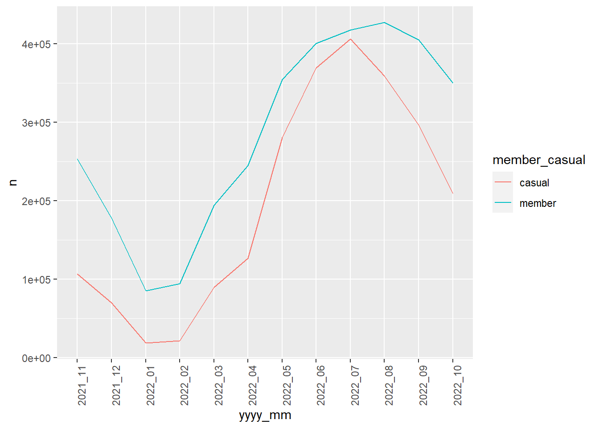

library(dplyr)
suppressPackageStartupMessages(library(here))
library(stringr)
library(tidyr)
library(readr)
library(ggplot2)Case Study: How Does a Bike-Share Navigate Speedy Success?
1. Ask
Financial analysts at Cyclistic have determined that annual members are more profitable than casual riders. The director of marketing believes future growth depends on maximizing the number of annual members. The overarching business task can be stated as follows:
Business task: Maximize the number of annual members by converting casual riders (single-ride and full-day passes) to annual members (annual membership).
In order to solve this business problem we need to design a new marketing strategy that will be informed by trends in the historical bike trip data. As a junior data analyst I have been asked to focus on one of the questions guiding the future marketing program:
Data analysis goal: How do annual members and casual riders use Cyclistic bikes differently?
Key stakeholders
The key stakeholders in this project are:
Cyclistic executive team: They will decide whether to approve the recommended marketing program
Lily Moreno (director of marketing and my manager): She is responsible for the development of campaigns and initiatives to promote the bike-share program and will need my recommendations to help her design a successful new marketing campaign to generate new annual memberships
2. Prepare
This fictional case involves Chicago-area bike ride share program Divvy. Divvy’s historical trip data have been made available by Motivate International Inc. under this license, which includes the right to “access, reproduce, analyze, copy, modify, distribute in your product or service and use the Data for any lawful purpose”.
The data is organized in a directory containing zipped .csv files. Based on the file names I can deduce that they cover the period from 2013 to 2022. I will limit myself to the data from the most recent 12 months available (November 2021 - October 2022). The files in this time range use a consistent naming format (‘YYYYMM-divvy-tripdata.zip’), making it easy to download the files programmatically. I use two R scripts to download the 12 .zip files and extract the 12 .csv files of interest. These are placed in a sub-folder of the main directory called raw_data.
Loading required packages:
I source the scripts 01_make_file_names_function.R and 02_extract_csv_files.R to programmatically download and extract the files:
#source("01_make_file_names_function.R")
#source("02_extract_csv_files.R")Once the 12 .csv files are extracted and saved in the raw_data sub-folder I import them as data frames and save them in a list:
# create vector of .csv files to import
temp <- list.files(here("raw_data"), pattern="*.csv")
# import all .csv files as data frames and store them in a list called 'trips'
trips <- lapply(file.path(here("raw_data"), temp), read_csv)Rows: 359978 Columns: 13
── Column specification ────────────────────────────────────────────────────────
Delimiter: ","
chr (7): ride_id, rideable_type, start_station_name, start_station_id, end_...
dbl (4): start_lat, start_lng, end_lat, end_lng
dttm (2): started_at, ended_at
ℹ Use `spec()` to retrieve the full column specification for this data.
ℹ Specify the column types or set `show_col_types = FALSE` to quiet this message.
Rows: 247540 Columns: 13
── Column specification ────────────────────────────────────────────────────────
Delimiter: ","
chr (7): ride_id, rideable_type, start_station_name, start_station_id, end_...
dbl (4): start_lat, start_lng, end_lat, end_lng
dttm (2): started_at, ended_at
ℹ Use `spec()` to retrieve the full column specification for this data.
ℹ Specify the column types or set `show_col_types = FALSE` to quiet this message.
Rows: 103770 Columns: 13
── Column specification ────────────────────────────────────────────────────────
Delimiter: ","
chr (7): ride_id, rideable_type, start_station_name, start_station_id, end_...
dbl (4): start_lat, start_lng, end_lat, end_lng
dttm (2): started_at, ended_at
ℹ Use `spec()` to retrieve the full column specification for this data.
ℹ Specify the column types or set `show_col_types = FALSE` to quiet this message.
Rows: 115609 Columns: 13
── Column specification ────────────────────────────────────────────────────────
Delimiter: ","
chr (7): ride_id, rideable_type, start_station_name, start_station_id, end_...
dbl (4): start_lat, start_lng, end_lat, end_lng
dttm (2): started_at, ended_at
ℹ Use `spec()` to retrieve the full column specification for this data.
ℹ Specify the column types or set `show_col_types = FALSE` to quiet this message.
Rows: 284042 Columns: 13
── Column specification ────────────────────────────────────────────────────────
Delimiter: ","
chr (7): ride_id, rideable_type, start_station_name, start_station_id, end_...
dbl (4): start_lat, start_lng, end_lat, end_lng
dttm (2): started_at, ended_at
ℹ Use `spec()` to retrieve the full column specification for this data.
ℹ Specify the column types or set `show_col_types = FALSE` to quiet this message.
Rows: 371249 Columns: 13
── Column specification ────────────────────────────────────────────────────────
Delimiter: ","
chr (7): ride_id, rideable_type, start_station_name, start_station_id, end_...
dbl (4): start_lat, start_lng, end_lat, end_lng
dttm (2): started_at, ended_at
ℹ Use `spec()` to retrieve the full column specification for this data.
ℹ Specify the column types or set `show_col_types = FALSE` to quiet this message.
Rows: 634858 Columns: 13
── Column specification ────────────────────────────────────────────────────────
Delimiter: ","
chr (7): ride_id, rideable_type, start_station_name, start_station_id, end_...
dbl (4): start_lat, start_lng, end_lat, end_lng
dttm (2): started_at, ended_at
ℹ Use `spec()` to retrieve the full column specification for this data.
ℹ Specify the column types or set `show_col_types = FALSE` to quiet this message.
Rows: 769204 Columns: 13
── Column specification ────────────────────────────────────────────────────────
Delimiter: ","
chr (7): ride_id, rideable_type, start_station_name, start_station_id, end_...
dbl (4): start_lat, start_lng, end_lat, end_lng
dttm (2): started_at, ended_at
ℹ Use `spec()` to retrieve the full column specification for this data.
ℹ Specify the column types or set `show_col_types = FALSE` to quiet this message.
Rows: 823488 Columns: 13
── Column specification ────────────────────────────────────────────────────────
Delimiter: ","
chr (7): ride_id, rideable_type, start_station_name, start_station_id, end_...
dbl (4): start_lat, start_lng, end_lat, end_lng
dttm (2): started_at, ended_at
ℹ Use `spec()` to retrieve the full column specification for this data.
ℹ Specify the column types or set `show_col_types = FALSE` to quiet this message.
Rows: 785932 Columns: 13
── Column specification ────────────────────────────────────────────────────────
Delimiter: ","
chr (7): ride_id, rideable_type, start_station_name, start_station_id, end_...
dbl (4): start_lat, start_lng, end_lat, end_lng
dttm (2): started_at, ended_at
ℹ Use `spec()` to retrieve the full column specification for this data.
ℹ Specify the column types or set `show_col_types = FALSE` to quiet this message.
Rows: 701339 Columns: 13
── Column specification ────────────────────────────────────────────────────────
Delimiter: ","
chr (7): ride_id, rideable_type, start_station_name, start_station_id, end_...
dbl (4): start_lat, start_lng, end_lat, end_lng
dttm (2): started_at, ended_at
ℹ Use `spec()` to retrieve the full column specification for this data.
ℹ Specify the column types or set `show_col_types = FALSE` to quiet this message.
Rows: 558685 Columns: 13
── Column specification ────────────────────────────────────────────────────────
Delimiter: ","
chr (7): ride_id, rideable_type, start_station_name, start_station_id, end_...
dbl (4): start_lat, start_lng, end_lat, end_lng
dttm (2): started_at, ended_at
ℹ Use `spec()` to retrieve the full column specification for this data.
ℹ Specify the column types or set `show_col_types = FALSE` to quiet this message.# extract date from file names and name data frames in the format 'yyyy_mm'
names(trips) <- sapply(temp, function(m) str_replace(m,
pattern = "(.{4})(.{2})(.*)",
replacement = paste("\\1_\\2")))
# get a glimpse of the list
glimpse(trips[1:2])List of 2
$ 2021_11: spc_tbl_ [359,978 × 13] (S3: spec_tbl_df/tbl_df/tbl/data.frame)
..$ ride_id : chr [1:359978] "7C00A93E10556E47" "90854840DFD508BA" "0A7D10CDD144061C" "2F3BE33085BCFF02" ...
..$ rideable_type : chr [1:359978] "electric_bike" "electric_bike" "electric_bike" "electric_bike" ...
..$ started_at : POSIXct[1:359978], format: "2021-11-27 13:27:38" "2021-11-27 13:38:25" ...
..$ ended_at : POSIXct[1:359978], format: "2021-11-27 13:46:38" "2021-11-27 13:56:10" ...
..$ start_station_name: chr [1:359978] NA NA NA NA ...
..$ start_station_id : chr [1:359978] NA NA NA NA ...
..$ end_station_name : chr [1:359978] NA NA NA NA ...
..$ end_station_id : chr [1:359978] NA NA NA NA ...
..$ start_lat : num [1:359978] 41.9 42 42 41.9 41.9 ...
..$ start_lng : num [1:359978] -87.7 -87.7 -87.7 -87.8 -87.6 ...
..$ end_lat : num [1:359978] 42 41.9 42 41.9 41.9 ...
..$ end_lng : num [1:359978] -87.7 -87.7 -87.7 -87.8 -87.6 ...
..$ member_casual : chr [1:359978] "casual" "casual" "casual" "casual" ...
..- attr(*, "spec")=
.. .. cols(
.. .. ride_id = col_character(),
.. .. rideable_type = col_character(),
.. .. started_at = col_datetime(format = ""),
.. .. ended_at = col_datetime(format = ""),
.. .. start_station_name = col_character(),
.. .. start_station_id = col_character(),
.. .. end_station_name = col_character(),
.. .. end_station_id = col_character(),
.. .. start_lat = col_double(),
.. .. start_lng = col_double(),
.. .. end_lat = col_double(),
.. .. end_lng = col_double(),
.. .. member_casual = col_character()
.. .. )
..- attr(*, "problems")=<externalptr>
$ 2021_12: spc_tbl_ [247,540 × 13] (S3: spec_tbl_df/tbl_df/tbl/data.frame)
..$ ride_id : chr [1:247540] "46F8167220E4431F" "73A77762838B32FD" "4CF42452054F59C5" "3278BA87BF698339" ...
..$ rideable_type : chr [1:247540] "electric_bike" "electric_bike" "electric_bike" "classic_bike" ...
..$ started_at : POSIXct[1:247540], format: "2021-12-07 15:06:07" "2021-12-11 03:43:29" ...
..$ ended_at : POSIXct[1:247540], format: "2021-12-07 15:13:42" "2021-12-11 04:10:23" ...
..$ start_station_name: chr [1:247540] "Laflin St & Cullerton St" "LaSalle Dr & Huron St" "Halsted St & North Branch St" "Halsted St & North Branch St" ...
..$ start_station_id : chr [1:247540] "13307" "KP1705001026" "KA1504000117" "KA1504000117" ...
..$ end_station_name : chr [1:247540] "Morgan St & Polk St" "Clarendon Ave & Leland Ave" "Broadway & Barry Ave" "LaSalle Dr & Huron St" ...
..$ end_station_id : chr [1:247540] "TA1307000130" "TA1307000119" "13137" "KP1705001026" ...
..$ start_lat : num [1:247540] 41.9 41.9 41.9 41.9 41.9 ...
..$ start_lng : num [1:247540] -87.7 -87.6 -87.6 -87.6 -87.7 ...
..$ end_lat : num [1:247540] 41.9 42 41.9 41.9 41.9 ...
..$ end_lng : num [1:247540] -87.7 -87.7 -87.6 -87.6 -87.6 ...
..$ member_casual : chr [1:247540] "member" "casual" "member" "member" ...
..- attr(*, "spec")=
.. .. cols(
.. .. ride_id = col_character(),
.. .. rideable_type = col_character(),
.. .. started_at = col_datetime(format = ""),
.. .. ended_at = col_datetime(format = ""),
.. .. start_station_name = col_character(),
.. .. start_station_id = col_character(),
.. .. end_station_name = col_character(),
.. .. end_station_id = col_character(),
.. .. start_lat = col_double(),
.. .. start_lng = col_double(),
.. .. end_lat = col_double(),
.. .. end_lng = col_double(),
.. .. member_casual = col_character()
.. .. )
..- attr(*, "problems")=<externalptr> Before I combine all the data frames into one, I need to confirm whether they have same number of columns and identical column names.
sapply(trips, ncol)2021_11 2021_12 2022_01 2022_02 2022_03 2022_04 2022_05 2022_06 2022_07 2022_08
13 13 13 13 13 13 13 13 13 13
2022_09 2022_10
13 13 All data frames have 13 columns.
sapply(lapply(trips, colnames), identical, colnames(trips[[1]]))2021_11 2021_12 2022_01 2022_02 2022_03 2022_04 2022_05 2022_06 2022_07 2022_08
TRUE TRUE TRUE TRUE TRUE TRUE TRUE TRUE TRUE TRUE
2022_09 2022_10
TRUE TRUE They also have identical column names. This allows me to combine them (stack them) by row in one large data frame.
# bind all data frames of list by row (stack) and add new column 'yyyy_mm'
# linking each row to its original data frame
trips <- bind_rows(trips, .id = "yyyy_mm")# separate 'yyyy_mm' column into 'year' and 'month' columns
trips <- trips %>%
separate(yyyy_mm,
into = c("year", "month"),
sep = "_",
remove = FALSE,
convert = TRUE)I now check how many bike trips were registered per month.
trips %>%
group_by(yyyy_mm) %>%
summarise(n = n()) %>%
ggplot(aes(x = yyyy_mm, y = n, group = 1)) + geom_line(color = "blue") +
theme(axis.text.x = element_text(angle = 90))
The number of bike trips shows clear seasonality, with a peak in July and a trough in January, suggesting bike usage is highly dependent on general weather conditions.
A brief look at the file sizes suggests that importing these into RStudio and combining them in one dataframe can potentially crash the program or slow it down considerably. I therefore choose to avoid importing all the data in RStudio, but instead download the .csv files in my computer and save them as separate tables in a new SQLite database. I then use R to send SQL queries to the database to retrieve only the data I need for a particular analysis.
# csv_sizes <- tibble(file = list.files(here("raw_data")),
# size = file.size(list.files(here("raw_data"),
# full.names = TRUE))) %>%
# mutate(size_mb = size / 1048576)
#
# library(ggplot2)
# library(stringr)
#
# my_labels <- sapply(csv_sizes$file, function(m) str_replace(m,
# pattern = "(.{4})(.{2})(.*)",
# replacement = paste("\\1-\\2")))
#
# csv_sizes %>%
# ggplot(aes(x = file, y = size_mb, group = 1)) + geom_line() +
# labs(title = paste0("Total size of files is ",
# csv_sizes %>% summarize(round(sum(size_mb), 0)) %>%
# pull(), " MB")) +
# theme(axis.text.x = element_text(angle = 45)) +
# scale_x_discrete(labels = my_labels)3. Process
4. Analyze
knitr::opts_chunk$set(fig.path = here::here(“figs”))